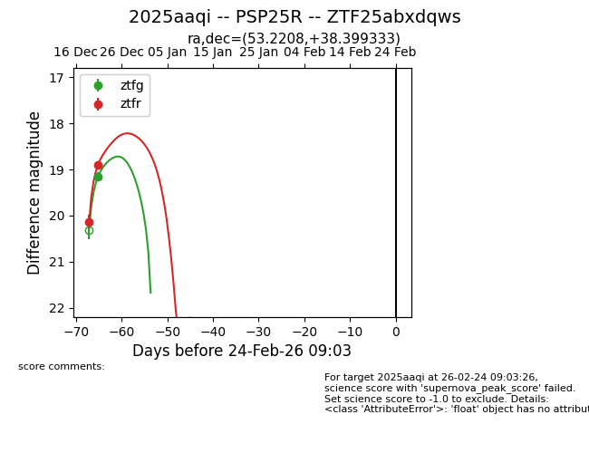
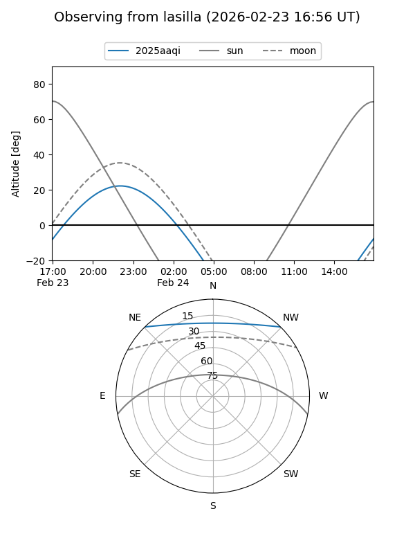
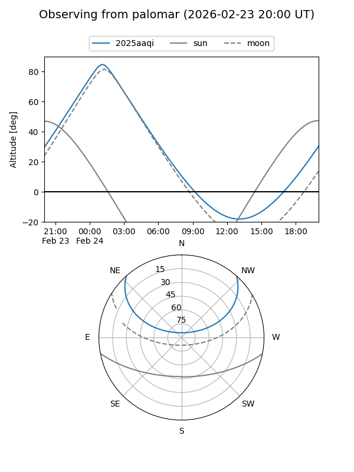

2025aaqi
Target 2025aaqi at 2025-12-23 10:02
Aliases and brokers:
FINK: fink-portal.org/ZTF25abxdqws
Lasair: lasair-ztf.lsst.ac.uk/objects/ZTF25abxdqws
ALeRCE: alerce.online/object/ZTF25abxdqws
TNS: wis-tns.org/object/2025aaqi
YSE: ziggy.ucolick.org/yse/transient_detail/2025aaqi
alt names
ZTF25abxdqws (ztf,fink_ztf)
2025aaqi (tns,yse)
PSP25R (panstarrs)
Coordinates:
equatorial (ra, dec) = 53.2208,+38.39933
equatorial (HMS+DMS) = 03:32:52.99,+38:23:57.60
galactic (l, b) = (154.5281,-14.37320)
Flags:
Photometry:
last ztfg=19.16, ztfr=18.91
1 ztfg, 2 ztfr detections
Lightcurve

Visibility


Additional plots